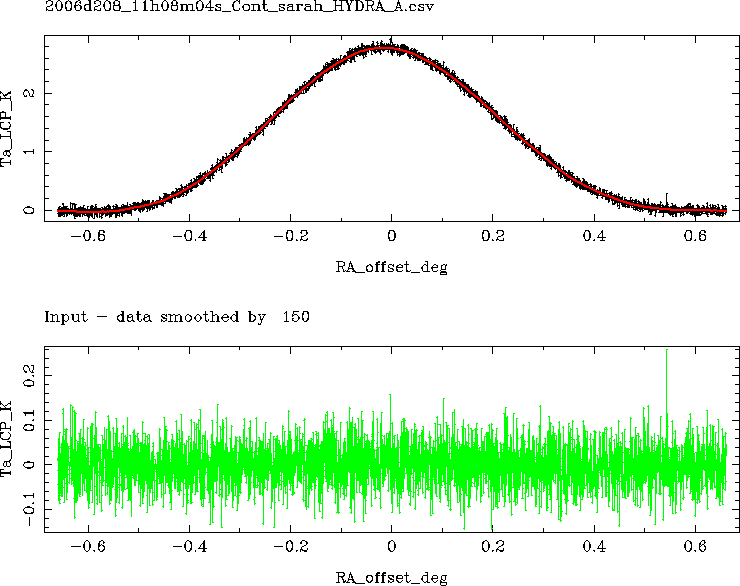

SM [smoothing width] [memory]
Apply running mean smoothing to the data in the specified memory.
If the smoothing width in pixels / channels is not given, the user is
prompted for a value.
If the memory is not given as a parameter, the set memory is used.
If data with spikes (outliers) need to be cleaned, try using median
filtering (function MF).
Then try SM as needed.
It is particularly useful for drift scans, which are heavily oversampled.
See also smoothing drift scans.
Example:
In the upper plot, the original data is in black
and the smoothed data is in red.
In the lower plot the data - smoothed data are shown in green.
